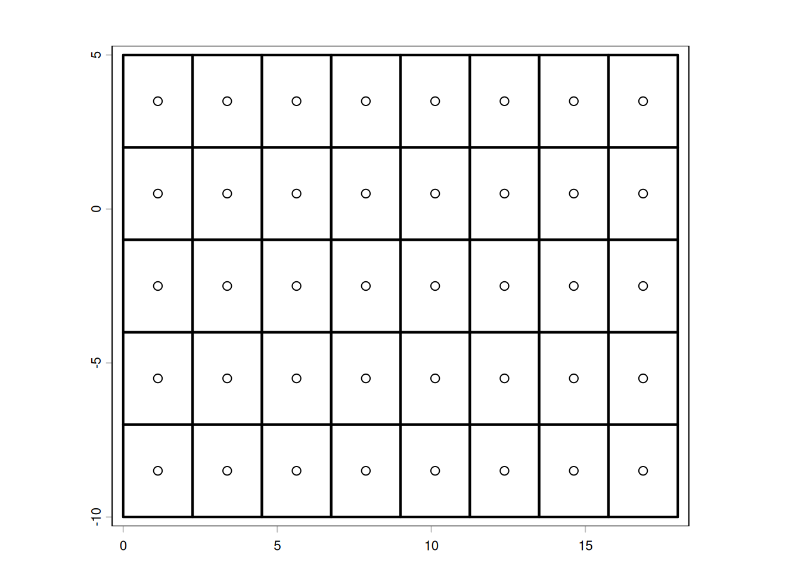

A grid taxonomy rooted in coordinate storage, not CRS. A companion to Detecting hidden grids in curvilinear coordinates.
gdal
raster
netcdf
projections
theory
Author
Michael Sumner
Published
May 28, 2026
The problem with “curvilinear”
The word curvilinear has a problem in geospatial and earth observation. It gets used interchangeably with “has two-dimensional lon/lat coordinate arrays” or even “is in geographic coordinates”. Neither of these is a helpful meaning, and conflating them causes real problems - both in how we think about data and in how we write code to handle it.
This post attempts to explain the terminology from a particular stance. Start with this hierarchy:
Each step relaxes a geometric constraint, and our starting point is that the first 3 types are a structured grid. The distinguishing criterion between each step is not the coordinate reference system. It is the minimum amount of information needed to specify the position of every cell - which is exactly the amount of information that has to be stored.
This post is a companion to Detecting hidden grids in curvilinear coordinates, which develops the practical detection problem. Here we make a stance about a confusing feature of terminology and explain why it matters with real world examples.
Structured grids
“Structured” just means that every element in every dimension has the same number of other-dimension counterparts. It’s rectangular: in 1D that’s a set of intervals, in 2D a mosaic of axis-aligned rectangular cells, in 3D a mosaic of axis-aligned rectangular cuboids, and upwards. We can replace intervals, rectangles, cuboids, tesseracts, … with another kind of element: a point. In 1D it’s just a sequence of points, in 2D and above it’s the Cartesian product of sequences of indices. When we talk about structured vs unstructured we are not talking about the spacing of coordinates in any sense - always just index positions. The index structure is, in more formal terms, a cubical complex or regular CW complex; the Earth system modelling community calls this “logically rectangular,” a term we return to below in “Logically rectangular” and the Earth system model vocabulary.
The ladder, defined by storage
The cleanest single organizing principle comes from scientific visualization (the VTK data model, the KTH/Weinkauf taxonomy): grid types differ in how implicitly or explicitly positions must be stated.
Regular (uniform)
Positions are fully implicit. The grid is completely specified by:
an origin \((x_0, y_0)\)
a resolution \((\Delta x, \Delta y)\)
dimensions \((n_x, n_y)\)
(Here if you need please pause for a pedantic 1 footnote).
Every cell centre follows from index arithmetic alone. No coordinate arrays are stored - or if they are, they are redundant.
Code
# synthetic exampleex <-c(0, 18, -10, 5) ## extent xmin, xmax, ymin, ymax # - same information as bbox xmin,ymin,xmax,ymax#dimension, or shape (ncols,nrows)dm <-c(8, 5)library(terra)
terra 1.9.44
Code
r <-rast(ext(ex), ncols = dm[1], nrows = dm[2])plot(as.polygons(r), asp =1, lwd =2)points(xyFromCell(r, 1:ncell(r)))

Figure 1: A regular grid: uniform spacing, axis-aligned. Fully specified by four numbers and a CRS.
There are two clear ways to think about a regular grid, little area rectangles or a set of centre points - each contains exactly the same information, and each is completely definable by six numbers - ncols, nrows, xmin, ymin, xmax, ymax. Those numbers might be rearrange in order or expressed as offsetscale (a transform), but that doesn’t change anything materially.
The netCDF convention for a regular grid stores 1D coordinate variables, a value for every step in the dimension. This is the degenerate rectilinear case: the 1D vectors happen to be uniformly spaced, so the six-number specification is sufficient. Many files store them anyway, and many readers treat the uniform case no differently from the variable-spacing case.
What are the coordinates? Well they are the positions of the points above, the centres of a cell. It’s trivial to observe that we only need 8 points for every x coordinate, 5 for every y coordinate. But, in turn we don’t need the coordinates at all because they were generated from 6 numbers. Those six are extremely general, every regular grid ever is a variation on those values: positive ncols, nrows >= 1; any numbers at all for xmin, xmax, ymin, ymax so long at xmax > xmin; ymax > ymin.
The coordinates stored in the 1D vectors are derived values - computed from those 6 numbers by the formula xi=xmin+(i+0.5)⋅Δxx_i = x_{min} + (i + 0.5) x xi=xmin+(i+0.5)⋅Δx (or the equivalent for edges). So storing them is not just redundant, it is a lossy redundancy - the stored floats have accumulated rounding error relative to the exact values the formula would produce. The 6-number specification is not only more compact, it is more precise.
In the wild: NSIDC sea ice concentration products, ERA5 reanalysis on a regular lat/lon grid, most remote sensing imagery.
Rectilinear
Positions are semi-implicit. The grid remains axis-aligned and orthogonal, but the spacing along each axis may vary independently. Specified by:
one 1D vector of \(x\) positions (length \(n_x\))
one 1D vector of \(y\) positions (length \(n_y\))
Cell \((i, j)\) is at \((x_i, y_j)\) - still the outer product of two 1D sequences. Two arrays, not \(n_x \times n_y\) arrays.
Code
# synthetic example# x <- c(0, 1, 3, 6, 10) # non-uniform# y <- c(0, 2, 3, 7)# show grid lines: horizontal and vertical only, variable spacing# contrast with regular above
This is the grid type that netCDF calls simply “a grid with coordinate variables” - 1D variables sharing a name with a dimension. A logarithmically-spaced pressure axis is rectilinear. A global ocean product with uniform longitude spacing but Mercator-compressed latitude spacing is rectilinear (and, as the companion post shows, is detected as rectilinear in lon/lat with Mercator y-spacing).
In the wild: BRAN ocean reanalysis (uniform lon, Mercator lat), pressure-level atmospheric data, many regional climate model outputs.
Note on contested usage: Some systems (particularly in HPC/CFD) have begun using rectilinear to cover both regular and curvilinear cases, blurring the distinction. In this post, rectilinear means what it says: rectangle-forming, axis-aligned, independently varying in each dimension. The distinction from regular matters because the storage and the indexing arithmetic differ. (See The affine/homogeneous coordinates aside below for why rectilinear grids quietly drop the geotransform machinery.)
Curvilinear
Positions are fully explicit. The grid retains the combinatorial structure of a regular grid - cells are still indexed \((i, j)\), each cell still has four neighbours - but the physical positions of cells cannot be expressed as the outer product of two 1D sequences. You need:
a 2D array of \(x\) (or longitude) values, shape \((n_y, n_x)\)
a 2D array of \(y\) (or latitude) values, shape \((n_y, n_x)\)
Total storage: \(2 \times n_x n_y\) values instead of \(n_x + n_y\).
Code
# synthetic example: apply a smooth warp to a regular grid# e.g. rotate + shear, or a polar stereographic → lonlat forward projection# show that rows are no longer horizontal, columns no longer vertical# this is the ESMF example: a grid warped to put the pole over land
The canonical geoscience examples are ocean model grids warped to move the numerical pole away from the geographic North Pole (tripolar grids, ORCA family), and polar stereographic or Lambert conformal grids stored in geographic coordinates. The cells are quadrilaterals. Grid lines curve. But the connectivity is the same as a regular grid - you can still walk from \((i, j)\) to \((i+1, j)\).
In CF conventions, curvilinear grids are identified by auxiliary coordinate variables: lat(y, x) and lon(y, x) are 2D variables listed in the coordinates attribute, not 1D dimension coordinates. This is the code-level signal.
# detecting curvilinear in vapour# TODO: show vapour::gdal_raster_data on a curvilinear source# show that coordinate arrays have dim > 1 in both axes# library(vapour)# src <- "some_ocean_model.nc"# ...
In the wild: NEMO/ORCA ocean models, MOM6, ROMS, HYCOM - all use bipolar or tripolar grids. Many Antarctic sea ice model outputs. MODIS/VIIRS L2 swath products (genuinely curvilinear - scan geometry, not a reprojected regular grid).
Unstructured
No implicit connectivity. Each cell’s position and its neighbours must be stated explicitly. The index \((i, j)\) no longer applies - cells are numbered arbitrarily. This covers:
# synthetic Delaunay triangulation over a region# contrast with the i,j indexing of curvilinear above
In the wild: MPAS-Ocean, FVCOM coastal ocean models, coastline data, terrain TINs.
The spectrum as a table
Type
Connectivity
Coordinate storage
CF signal
Regular
implicit \((i,j)\)
origin + step (4 numbers)
1D coord vars, uniform spacing
Rectilinear
implicit \((i,j)\)
two 1D vectors
1D coord vars, variable spacing
Curvilinear
implicit \((i,j)\)
two 2D arrays
2D auxiliary coord vars
Unstructured
explicit table
\(n_{cells}\) position pairs + connectivity
UGRID convention
The progression is strict containment: every regular grid is rectilinear; every rectilinear grid could be stored as curvilinear (wastefully); a curvilinear grid is a structured grid (logically rectangular in the sense of Balaji 2006).
“Logically rectangular” and the Earth system model vocabulary
The Earth system modelling community (ESMF, GFDL, NEMO) uses a slightly different framing that is worth knowing. Balaji (2006) defines a grid as logically rectangular if its coordinate space maps one-to-one to an integer index space - i.e., cells can be addressed as \((i, j)\). This covers regular, rectilinear, and curvilinear in our ladder above. Unstructured grids are not logically rectangular.
ESMF then distinguishes uniform, rectilinear, and curvilinear as subtypes of logically rectangular - exactly the ladder above minus unstructured. This is consistent usage.
The key sentence from Balaji: “The coordinate space may continue to be physically curvilinear; yet, in index space, grid cells will be rectilinear boxes.” Index space is always regular. Physical space may be warped. Curvilinear is a statement about physical space, not index space.
“Curvilinear” is not a CRS
Here is the specific conflation this post exists to name.
A regular Polar Stereographic grid - say, the NSIDC 25 km Southern Ocean grid on EPSG:3412 - is regular. It has uniform spacing in projected coordinates. It can be fully specified by four numbers and a CRS string. We are not saying anything at all about the area or distance on the Earth represented by those cells. This is true in Stereographic (it varies), it’s true in Mercator, in longitude/latitude, in Lambert Azimuthal Equal Area, in Equidistant Conic: it doesn’t matter - the real-world “correctness” of area, distance, or angle is irrelevant to the regularity of the grid in its native CRS.
When a Polar Stereographic grid’s cell centres are forward-projected to geographic coordinates and stored as lat(y, x) / lon(y, x) two-dimensional arrays in a NetCDF file, the storage format looks curvilinear. The CF signal is present: 2D auxiliary coordinate variables. But the underlying geometry is not curvilinear - it is regular, with two arrays of floating-point noise standing in for four exact integers.
This is the entropy problem described in the companion post. The confusion arises because:
CF conventions use the shape of coordinate arrays as the proxy for grid type, and a reprojected regular grid has 2D arrays.
Many tools that read CF files label anything with 2D coordinate variables as “curvilinear” without checking whether those arrays have rectilinear or regular structure.
“Geographic coordinates” and “curvilinear coordinates” have been conflated in enough documentation that people assume any lon/lat grid is curvilinear.
The correct test is geometric, not syntactic: can the positions be expressed as the outer product of two 1D sequences (rectilinear), or as origin + step (regular)? If yes, the grid is not curvilinear regardless of how its coordinates are stored.
The detection methods in the companion post are the practical implementation of this test.
Genuinely curvilinear examples
To make the distinction concrete: these are cases where the 2D coordinate arrays are not hiding a regular grid.
ORCA bipolar ocean grid. The NEMO ocean model uses a grid that is regular in the Southern Ocean and tropics but deforms near the North Pole to place the numerical singularity over land (Greenland and Siberia). The resulting nav_lon / nav_lat arrays cannot be factored into 1D sequences by any projection. This is genuinely curvilinear.
Code
# TODO: plot nav_lon/nav_lat from an ORCA file, zoom to Arctic# show the non-rectangular cells near the bipolar region
MODIS/VIIRS L2 swath. Sensor scan geometry produces curved swaths. Adjacent scan lines are not parallel, and the scan angle distortion means cells grow toward swath edges. No single projected CRS straightens this.
Code
# TODO: plot boundary polygon coloured by scan-line index# show the bow-tie artifact at scan edges
WRF/rotated-pole regional climate model. The model domain is regular in a rotated coordinate system (pole relocated to the equator of a rotated sphere), which becomes curvilinear in standard geographic coordinates. Detecting this is the Mercator analogue for rotated-pole: project to the rotated CRS, check for regularity there.
The degenerate rectilinear case
One last terminological note. NetCDF files frequently store 1D coordinate vectors for regular grids - a lon vector of length \(n_x\) and a lat vector of length \(n_y\), both uniformly spaced. Strictly speaking this is rectilinear storage (the format allows variable spacing), but the data is regular (the spacing happens to be uniform).
This is the degenerate rectilinear case: a rectilinear format carrying regular content. It matters because:
Tools that test only for uniform spacing on 1D arrays correctly identify the grid as regular.
Tools that check only “does it have 1D coordinate variables?” treat it as rectilinear (variable spacing allowed) and may not exploit the regularity.
The four-number specification is recoverable from the 1D vectors trivially.
For the netCDF case it is mostly a storage efficiency question. The interesting case is when the 1D vectors are non-uniformly spaced - genuinely rectilinear - which occurs in pressure-level data, stretched ocean grids (e.g. MOM with enhanced tropical resolution), and Mercator-latitude ocean products.
References and further reading
Balaji, V. (2006). A standard description of grids used in earth system models. GFDL/NOAA. The foundational taxonomy for the Earth system modelling community; introduces the logically rectangular / mosaic framework. GFDL grid standards
ESMF Reference Manual §12.1 - the most consistently used set of definitions in practice for geoscience regridding tools. Distinguishes uniform / rectilinear / curvilinear as subtypes of logically rectangular. earthsystemmodeling.org
CF Conventions §5 - the syntactic signal: 1D dimension coordinates vs 2D auxiliary coordinates. Does not define grid type geometrically but the encoding conventions follow the taxonomy here. cfconventions.org
Weinkauf, T. (KTH, 2015). Grids and Interpolation - the clearest single slide deck on the implicit/semi-implicit/explicit storage framing. Not geoscience-specific; comes from scientific visualisation.
Wikipedia: Regular grid - covers the structured grid sub-hierarchy with reasonable precision.
Detecting hidden grids in curvilinear coordinates (this site, 2026-02-07) - the practical companion: how to test whether a 2D lon/lat array is actually a regular projected grid with lost metadata.
Coordinates broken in NetCDF (this site, 2025-09-04) - an earlier treatment of the related problem of CF files with missing or misleading coordinate metadata.
The ladder is manifold-agnostic — and that is the point
The regular → rectilinear → curvilinear ladder characterises grids by their index structure and coordinate storage alone. The manifold — sphere, plane, torus, ellipsoid — is not part of the definition. You can have a regular grid on a sphere (HEALPix patches, cubed-sphere faces) or a regular grid on a plane; regularity is a property of the indexing, not the embedding. This is not a limitation of the ladder; it is the source of its generality and simplicity.
The longlat case is a clean illustration of what happens when you ignore the manifold. A global regular longlat grid is perfectly regular by the ladder’s definition: uniform spacing, Cartesian product index, four numbers and a CRS to specify it completely. And that’s fine — until your application needs to know that the top row is a pole and the left and right edges are the same meridian. At that point the ladder gives you no help. The wrapping logic, the polar singularity, the fact that cells covering Fiji and cells covering its antipode are not indexed as neighbours — none of that is encoded in the grid structure. It is external knowledge that the application must supply.
The ladder doesn’t fail at that boundary. It never claimed to address it.
What “wrapping logic” reveals
A regular longlat grid at 1° resolution has 360 × 180 = 64,800 cells. The top row contains 360 cells, all of which map to the South Pole — a single point. One cell (or at most three, for a T-shaped pole cap) would do the same geometric work. The other 357 are redundant, and the grid structure has no way to say so. Similarly, cell \((0, j)\) and cell \((359, j)\) are geographic neighbours — they share an edge at the antimeridian — but in index space they are as far apart as two cells can be. The Cartesian product index is silent about this.
This is not a pathology. It is simply what you get when you discretise a sphere with a tool designed for a flat rectangle. The grid is doing its job correctly by the ladder’s definition. The mismatch is between the ladder’s scope and the application’s needs.
When the manifold does matter to an application — global topology, correct adjacency, equal-area cells, no polar redundancy — you are outside the ladder’s scope. That is precisely the problem that DGGS are designed to solve.
DGGS: discretising the manifold directly
Discrete global grid systems (H3, S2, HEALPix, ISEA) approach the problem from the other direction. The manifold comes first; the discretisation is designed for the sphere, so adjacency, area, and topology are correct by construction. H3 hexagons near Fiji are indexed as neighbours of other hexagons near Fiji. There is no polar row of redundant cells because the addressing scheme is built around the sphere’s actual geometry.
The price is the Cartesian product index structure. DGGS cells don’t factor into rows and columns in any natural global sense (HEALPix has local patches with regular structure; H3 has a hierarchical addressing scheme with local regularity; but neither is globally Cartesian-product-indexable). This is why DGGS feel like unstructured grids to tools that expect \((i, j)\) — and in the ladder’s terms, they are. The structured/unstructured distinction still applies internally to a DGGS, but the global topology is not rectangular.
So DGGS sit outside the ladder not because they are more complex than unstructured grids, but because the ladder’s premise — index structure independent of the manifold — is exactly what DGGS reject. They are a different answer to a different question.
The ladder is the right tool when the manifold can be treated as external context. DGGS are the right tool when the manifold must be built into the addressing scheme. These are complementary, not competing.
Workarounds that live on the ladder
Most real-world geospatial work stays on the ladder but handles the manifold through external convention rather than anything the grid structure provides. This is worth naming:
Tripolar ocean grids (NEMO ORCA, MOM6 tripolar): curvilinear grids that move the numerical pole singularity over land. The grid is still logically rectangular — still on the ladder — but the topology (two northern poles, one southern pole) is encoded in the coordinate arrays and the model’s halo-exchange logic, not in the index structure.
NSIDC polar grids: regular projected grids (EPSG:3412, EPSG:3413) that implicitly wrap in the azimuthal sense. The grid structure doesn’t know this; applications that care about the antimeridian handle it separately.
vaster and vapour: deliberately silent about topology. They operate on the ladder — grid arithmetic, coordinate lookup, raster I/O — and leave manifold questions to the caller. This is the right scope decision; encoding sphere topology into a raster grid library would be the wrong level of abstraction.
The “subtle relationships and workflows and workarounds” in curvilinear ocean models are mostly the accumulated cost of living on the ladder with a spherical manifold. The ladder is the floor, not the ceiling.
The SeaWiFS L3bin: the connector
The sinusoidal L3 grid and the L3bin addressing scheme together make the ladder boundary more concrete than any abstract example.
The sinusoidal regular grid is the rectangular-index version of global equal-area ocean colour compositing. It is a regular grid in sinusoidal projection: uniform spacing in projected coordinates, four numbers and a CRS, perfectly on the ladder. But sinusoidal projection preserves area by compressing x-extent toward the poles: high-latitude rows are physically narrow. When you impose a uniform \(n_x\) column count across all rows, most high-latitude cells fall outside the Earth’s disk and are fill. The grid is valid; it is just mostly empty at the poles, and the emptiness is structural, baked in by the choice to force a sphere into a rectangle.
The SeaWiFS/MODIS/VIIRS L3bin resolves this directly. Each latitude row contains exactly as many bins as needed to tile that latitude band — no more, no fewer. Row widths vary. The result is a ragged array: not a matrix, not a Cartesian product, not on the ladder. By the ladder’s definition it is unstructured — each bin has an explicit address (the bin number) rather than a \((i, j)\) index pair.
But it is the simplest possible unstructured case. The bins are still organised by latitude band. The addressing scheme (bin number → row → column-within-row) is well-defined and compact. The geometry is explicit but not complicated. It is unstructured by necessity, not by complexity — the minimum departure from the ladder required to take the sphere seriously.
The contrast is the hook:
The sinusoidal regular grid: technically on the ladder, equal-area, but with a wasteful rectangular fiction imposed on a spherical reality. The manifold is ignored; fill cells paper over the mismatch.
The L3bin: off the ladder, but honest. The ragged structure is the sphere’s geometry expressed directly in the data structure. You traded the Cartesian product index for an accurate account of what you actually have.
This is the L3bin’s value as a connector. It is not an exotic case — it is used in virtually every ocean colour dataset from SeaWiFS through PACE. And it sits exactly at the boundary the ladder defines, making the boundary legible.
A post that works through the L3bin addressing scheme in R — reading bin numbers, recovering lat/lon, comparing to the sinusoidal regular grid counterpart — would make the abstract ladder concrete in a way that the regular/rectilinear/curvilinear examples cannot. That is post #2 (or #3, after the curvilinear detection post).
The affine/homogeneous coordinates aside
(Parked from a detour in the main post draft — too interesting to discard, too long to include.)
The GDAL geotransform is a 2×3 affine matrix (equivalently, a 3×3 homogeneous matrix with the bottom row fixed at [0, 0, 1]): the full projective/affine machinery for mapping pixel index → Cartesian position in a flat 2D plane. This is a genuinely 2D spatial problem, so the homogeneous coordinates are natural.
The rectilinear case exposes how much of that is a 1.5D trick. A rectilinear grid is two independent 1D problems — “where is column \(i\) on the x-axis” and “where is row \(j\) on the y-axis” — combined. There is no cross-term, no rotation, no shear. The “transform” collapses to two separate monotone sequences. Nobody would think to write a 3×3 homogeneous matrix for a 1D lookup table, because a lookup table is obviously just a lookup table.
The geotransform works for the regular case because regular grids are the degenerate rectilinear case — the lookup tables happen to be arithmetic sequences, so they compress back to origin + step, which is what the six geotransform numbers encode. The homogeneous machinery is present, but with most of its degrees of freedom set to zero.
The shadow quality: the geotransform is the full 2D affine apparatus applied to what is, in the regular case, a product of two 1D arithmetic sequences. When you move to rectilinear coordinates — genuinely variable spacing, two lookup tables — no one reaches for a matrix from a higher-dimensional space. The 1D lookup table is self-evidently sufficient. The geotransform convention makes the regular case look more 2D than it is. (Rotated or sheared regular grids are the exception that proves the rule — see the footnote on the Regular section above.)
The gproj package, which implements regularity detection, is at github.com/mdsumner/gproj. The vaster package provides the regular grid arithmetic used throughout the hypertidy ecosystem.
Footnotes
A regular grid need not be axis-aligned: an affine transform — with rotation, shear, and independent dx/dy — still specifies every cell position implicitly from its index. GDAL’s geotransform is exactly this: six numbers covering origin, scale, and the two off-diagonal (rotation/shear) components. The index structure, the storage economy, and the “regular” classification are unchanged. Rotated or sheared regular grids are uncommon in practice but not exotic; some satellite products use them. We ignore the off-diagonal case in the main text because it adds notation without changing the argument.↩︎